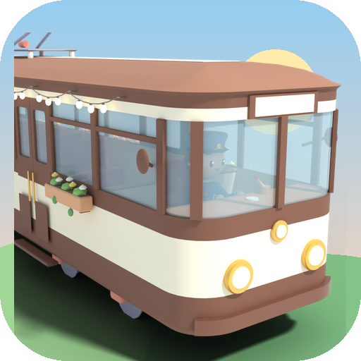
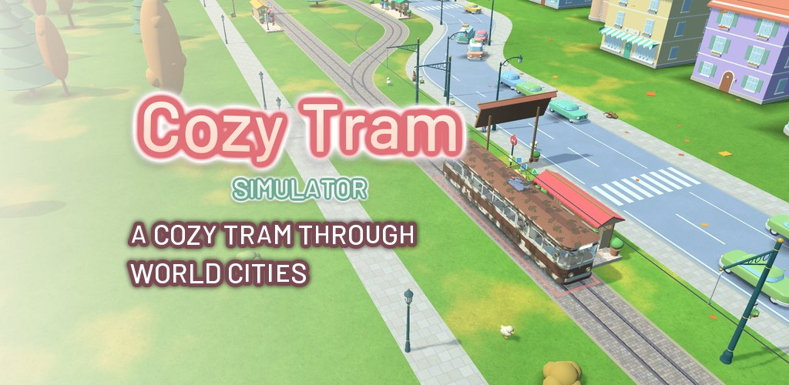
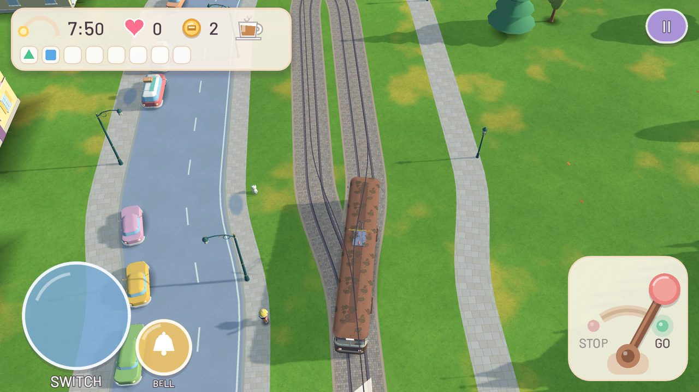
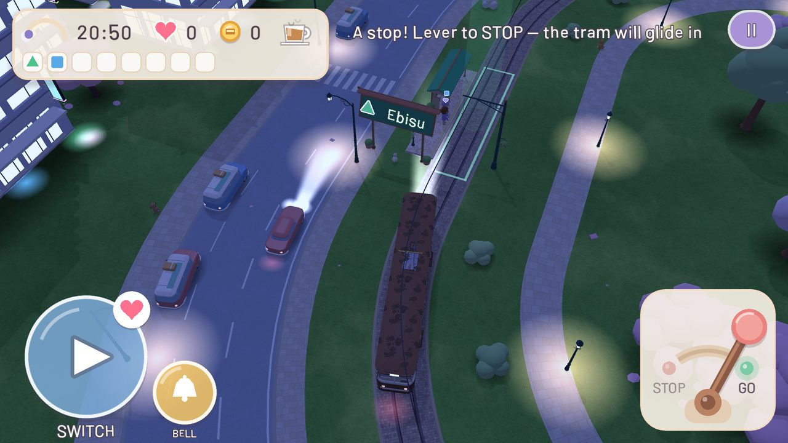
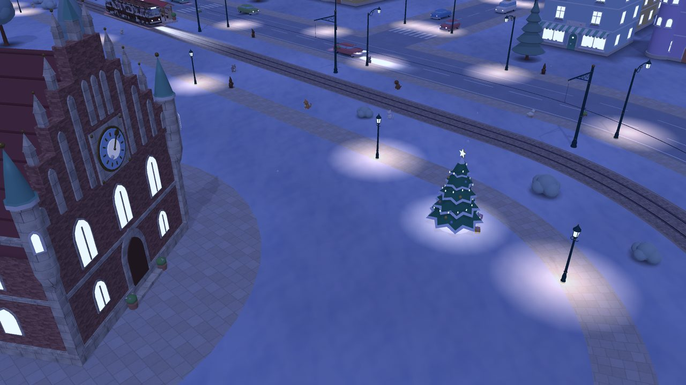
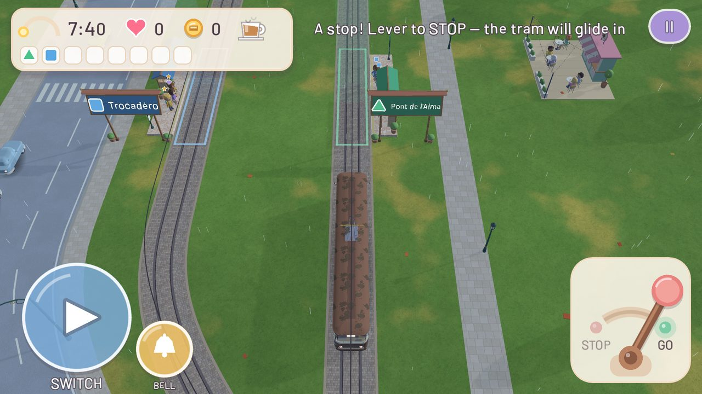
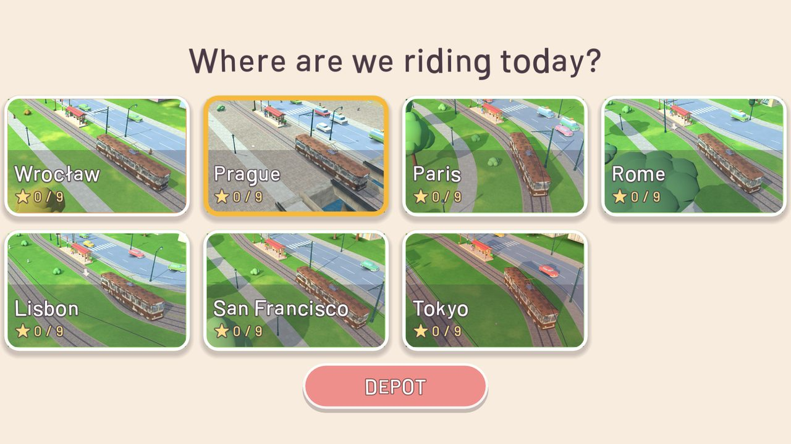
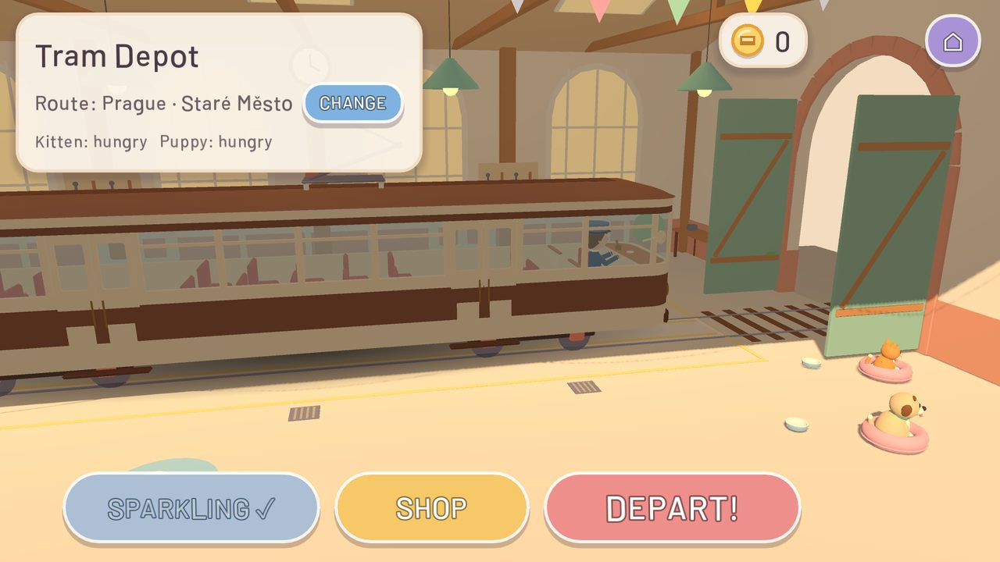
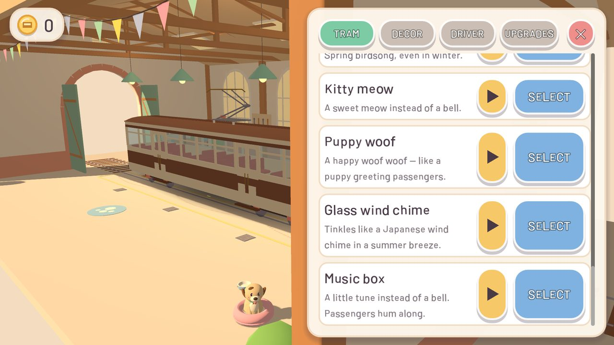

A relaxing tram ride through pastel cities
Ring the bell, close the doors and roll gently through a pastel little town. No crashes and no game over — just you, your tram and passengers who want to get home.
Get it on Google PlayFree · Android








The game is free and shows ads: small banners on the city and district maps and on the ride summary, and optional rewarded videos you choose to watch (double coins). A one-time Full Version removes all ads and unlocks the whole depot shop.
No account needed. Languages: English, Polish, German, Czech, French, Spanish, Portuguese, Italian and Japanese.